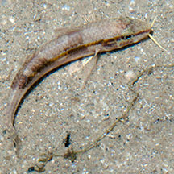
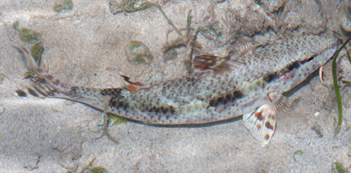
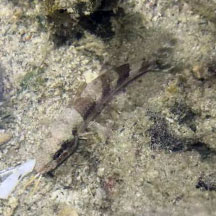

|
|
| fishes text index | photo index |
| Phylum Chordata > Subphylum Vertebrate > fishes |
| Freckled
goatfish Upeneus tragula Family Mullidae updated Sep 2020 Where seen? This well-camouflaged fish is sometimes seen on silty sandy shores near seagrasses. It may be common but just overlooked. It is considered the most widespread goatfish in the tropical Indo-Pacific. What are goatfishes? Goatfishes belong to Family Mullidae. According to FishBase: the family has 6 genera and 55 species in the Atlantic, Indian, and Pacific Oceans. Fish Goatee: Goatfishes have two long barbels on the chin, which contain chemosensory organs and are used to probe the sand or holes in the reef for bottom-dwelling animals or small fish. The barbels are also used by males during courtship of females. When not in use, the barbels are tucked away tightly under the chin. These fishes can change their colours with mood and during the day and night. Juveniles may look very different from adults. |
 Pair of barbels under the chin Changi, Jun 13 |
 Pulau Senang, Aug 10 |
| Features: The Freckled goatfish is up to 30cm long, those seen about 4-8cm long.
Body long and somewhat cylindrical, with a blunt snout. The pair of
barbels under the chin is hard to spot from above on a resting fish.
Those seen tend to have broad dark bars across the body. In some,
the forked tail had darkish bands. Accounts suggest the Freckled goatfish comes in a wide variety of colours and patterns. From red, to irregular dots and blotches on body; brown-blackish stripe from snout to tail fin. Adults with dark tips on both dorsal fins and typically with several yellow spots in the dark tip of the first dorsal fin. When resting on the bottom, they tend to be red and spotted, both during day or night. When swimming about to feed, they are light colored with a black stripe along the body. It is also called the Bar-tailed goatfish and Black-striped goatfish. What does it eat? It feeds on bottom dwelling such as worms, shrimps, crabs, snails and clams, echinoderms and little fishes. Human uses: Large ones are eaten as food fish. |
| Freckled goatfishes on Singapore shores |
On wildsingapore
flickr
|
| Other sightings on Singapore shores |
 Terumbu Raya, Sep 19 Photo shared by Kelvin Yong on facebook. |
||
| Family
Mullidae recorded for Singapore from Wee Y.C. and Peter K. L. Ng. 1994. A First Look at Biodiversity in Singapore. **from WORMS
|
Links
References
|